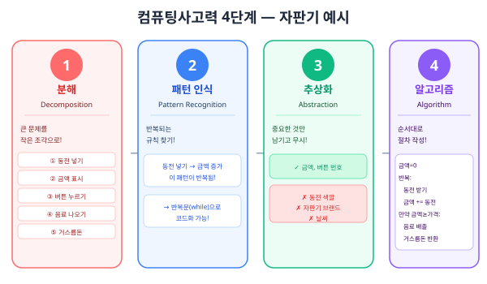
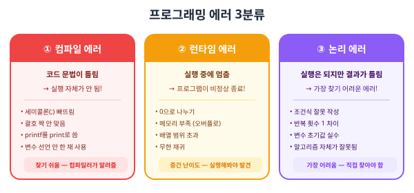
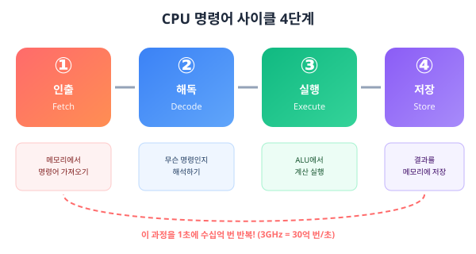
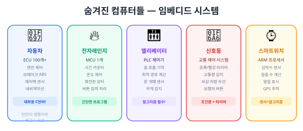
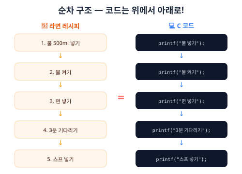

컴퓨터는 뭘 할 수 있을까?
📚 이번에 배울 것
- 컴퓨터가 잘하는 일과 못하는 일을 구별할 수 있어요.
- 프로그래밍이 뭔지 한 문장으로 설명할 수 있어요.
- 컴퓨터와 사람의 차이를 이해해요.
- 컴퓨터의 역사를 시대별로 설명할 수 있어요.
- 폰 노이만 아키텍처의 기본 개념을 알아요.
- [심화] 튜링 머신과 계산 가능성의 개념을 이해해요.
✅ 시작 전 체크
- 컴퓨터나 스마트폰을 써 본 적이 있다
- 글을 읽을 수 있다
컴퓨터는 대체 뭘까?

컴퓨터는 계산기일까요? 게임기일까요? 사실 둘 다예요. 컴퓨터는 사람이 시킨 일을 빠르고 정확하게 해내는 기계예요. 하지만 아무것도 시키지 않으면? 아무것도 안 해요. 그냥 전기만 먹고 있어요.
영어로 'computer'는 'compute(계산하다)'에서 왔어요. 원래 컴퓨터는 계산만 하는 기계였어요. 하지만 지금은 음악을 듣고, 그림을 그리고, 게임도 하고, 심지어 대화도 하죠. 어떻게 이렇게 됐을까요?
컴퓨터가 잘하는 것
컴퓨터는 세 가지를 아주 잘해요.
2. 정확한 반복 — 같은 일을 100만 번 시켜도 한 번도 틀리지 않아요. 지치지도 않아요.
3. 완벽한 기억 — 전화번호 1만 개를 외워도 하나도 안 잊어버려요.
컴퓨터가 못하는 것
그런데 컴퓨터가 못하는 것도 있어요. 꽤 많아요.
2. 창의력 — 새로운 아이디어를 떠올리지 못해요.
3. 감정 이해 — 친구가 울고 있어도 왜 우는지 몰라요.

컴퓨터 vs 사람 대결!

프로그래밍이란?
컴퓨터는 스스로 생각하지 못해요. 그래서 사람이 할 일을 알려줘야 해요. 이걸 프로그래밍이라고 해요.

요리에 비유하면 이래요. 레시피가 프로그램이고, 요리사(사람)가 프로그래머예요. 레시피대로 요리하는 로봇이 컴퓨터예요. 로봇은 레시피에 없는 건 절대 안 해요. '소금 조금'이라고 쓰면 '조금이 얼마야?'라고 물어볼 거예요.

프로그래밍 언어의 세계
사람끼리도 한국어, 영어, 일본어 등 여러 언어를 쓰죠? 컴퓨터에게 시키는 언어도 여러 가지가 있어요. 이걸 프로그래밍 언어라고 해요.
Python — 배우기 쉽고 인공지능에 많이 쓰여요.
Java — 앱, 서버 개발에 많이 쓰여요.
JavaScript — 웹사이트를 만들 때 쓰여요.
Scratch — 블록을 끌어다 놓는 시각적 프로그래밍 언어예요.
우리가 배울 C언어는 1972년에 만들어졌어요. 50년이 넘었지만 아직도 운영체제, 게임 엔진, 임베디드 시스템 등에서 널리 쓰이는 중요한 언어예요.
━━━ 여기서부터 역사 여행! ━━━
컴퓨터의 역사: 주판에서 스마트폰까지
0세대: 기계식 계산기 (1600~1940년대)
컴퓨터가 전자기기가 되기 전에는 톱니바퀴와 기어로 계산을 했어요.
프랑스의 블레즈 파스칼이 덧셈·뺄셈을 하는 기계를 만들었어요. 아버지의 세금 계산을 도우려고요!
1837년 — 배비지의 해석 기관
영국의 찰스 배비지가 '프로그래밍 가능한 컴퓨터'를 설계했어요. 실제로 완성하지는 못했지만, 현대 컴퓨터의 개념을 미리 상상한 거예요.
1843년 — 에이다 러브레이스
배비지의 기계를 위해 최초의 '프로그램'을 작성한 사람이에요. 세계 최초의 프로그래머로 불려요!
1세대: 진공관 컴퓨터 (1940~1950년대)
전기를 이용한 최초의 컴퓨터들이 등장했어요. 이 시대 컴퓨터의 핵심 부품은 진공관(vacuum tube)이었어요.
• 무게: 약 30톤 (코끼리 5마리!)
• 크기: 방 하나를 가득 채움 (약 167㎡)
• 진공관 18,000개 사용
• 1초에 덧셈 5,000번 (지금 보면 느리지만 당시엔 혁명적!)
• 전기 소비: 150킬로와트 (집 50채 분량!)
에니악은 포탄 탄도 계산을 위해 만들어졌어요.
진공관은 전구처럼 생긴 부품이에요. 전기 신호를 증폭하거나 스위치 역할을 해요. 하지만 크고, 뜨겁고, 잘 고장 났어요. 진짜로 나방이 진공관에 끼어서 오류가 생긴 적도 있어요! 이게 바로 '버그(bug)'라는 말의 유래예요.
2세대: 트랜지스터 (1950~1960년대)
1947년, 벨 연구소에서 트랜지스터가 발명됐어요. 진공관의 역할을 하지만 크기가 수백 분의 1로 작고, 전력도 적게 쓰고, 잘 고장 나지도 않았어요.
트랜지스터 덕분에 컴퓨터가 방 크기에서 캐비닛 크기로 줄어들었어요. 속도도 훨씬 빨라지고, 전기도 덜 먹고, 고장도 적어졌어요.
3세대: 집적 회로(IC) (1960~1970년대)
트랜지스터를 하나씩 연결하는 건 힘든 일이었어요. 그래서 1958년, 잭 킬비(Jack Kilby)가 혁명적인 아이디어를 냈어요. 여러 트랜지스터를 하나의 작은 칩에 넣자!
이 발명으로 컴퓨터가 훨씬 작고 빠르고 싸졌어요. 잭 킬비는 이 업적으로 2000년 노벨 물리학상을 받았어요.
4세대: 마이크로프로세서 (1970년대~현재)
1971년, 인텔(Intel)이 세계 최초의 마이크로프로세서 Intel 4004를 만들었어요. CPU 전체를 칩 하나에 담은 거예요!
IBM 7090(1959): 트랜지스터, 초당 연산 229,000번
Intel 4004(1971): 칩 1개, 초당 연산 60,000번 (범용 마이크로프로세서)
Intel i9(2024): 칩 1개, 초당 연산 수천억 번
80년 만에 속도가 수천만 배 빨라졌어요!
무어의 법칙
인텔의 공동 창업자 고든 무어(Gordon Moore)가 1965년에 흥미로운 예측을 했어요.
트랜지스터가 많아지면 → 더 빠르고 → 더 작고 → 더 싸진다.
무어의 법칙 덕분에 우리 주머니 속 스마트폰이 1990년대의 슈퍼컴퓨터보다 빨라요. 하지만 최근에는 트랜지스터 크기가 원자 수준에 가까워지면서 무어의 법칙이 한계에 다다르고 있어요.
개인용 컴퓨터(PC)의 탄생
컴퓨터가 작아지자, 개인이 사서 쓸 수 있게 됐어요.
1981년 — IBM이 IBM PC를 출시했어요. '개인용 컴퓨터(Personal Computer)' = PC라는 이름이 여기서 왔어요.
1984년 — 애플이 매킨토시를 출시. 마우스와 그래픽 인터페이스(GUI)를 처음 대중화했어요.
1985년 — 마이크로소프트가 Windows 1.0을 출시했어요.
인터넷과 스마트폰의 시대
1990년대에 인터넷이 대중화되면서 컴퓨터의 쓸모가 폭발적으로 늘어났어요. 2007년에는 애플이 아이폰을 출시하면서 스마트폰 시대가 열렸어요. 스마트폰도 컴퓨터예요 — 전화도 되는 아주 작은 컴퓨터!
━━━ 컴퓨터의 설계 원리 ━━━
[심화] 폰 노이만 아키텍처
1945년, 헝가리 출신 수학자 존 폰 노이만(John von Neumann)이 현대 컴퓨터의 기본 설계도를 제안했어요. 이걸 폰 노이만 아키텍처라고 불러요.
이전 컴퓨터(에니악 등)는 프로그램을 바꾸려면 전선을 다시 연결해야 했어요. 폰 노이만의 아이디어 덕분에 프로그램을 메모리에 넣고 바꾸기만 하면 다른 일을 할 수 있게 됐어요!
폰 노이만 아키텍처는 5가지 부분으로 이루어져 있어요.
연산 장치(ALU)와 제어 장치(CU)를 합쳐서 CPU라고 불러요. 지금 우리가 쓰는 거의 모든 컴퓨터가 이 설계를 따르고 있어요!
[심화] 하버드 아키텍처
폰 노이만 아키텍처에는 약점이 하나 있어요. 프로그램과 데이터가 같은 메모리를 쓰다 보니, CPU가 명령어를 읽을 때 동시에 데이터를 읽을 수 없어요. 이걸 폰 노이만 병목이라고 해요.
• 명령어와 데이터를 동시에 읽을 수 있어서 더 빨라요.
• 마이크로컨트롤러(아두이노 등)에서 많이 사용해요.
• 현대 CPU는 두 방식을 섞어서 사용해요 (캐시는 하버드, 메인 메모리는 폰 노이만).
[심화 내용] 튜링 머신과 계산 가능성
컴퓨터가 만들어지기도 전인 1936년, 영국 수학자 앨런 튜링(Alan Turing)이 '기계로 풀 수 있는 문제'가 무엇인지 수학적으로 정의했어요.
구성:
• 무한히 긴 테이프 (칸마다 기호를 적을 수 있음)
• 읽기/쓰기 헤드 (테이프의 한 칸을 읽고 쓸 수 있음)
• 상태 표 (현재 상태와 읽은 기호에 따라 다음 행동 결정)
• 유한개의 상태
이 단순한 기계로 이론적으로 모든 계산 가능한 문제를 풀 수 있어요!
튜링의 핵심 질문은 이거였어요: "기계로 풀 수 없는 문제도 있을까?"
"어떤 프로그램이 주어졌을 때, 이 프로그램이 끝나는지 영원히 돌아가는지 미리 알아내는 프로그램은 만들 수 없다." 이것이 정지 문제예요. 컴퓨터로 풀 수 없는 문제가 존재한다는 걸 수학적으로 증명한 거예요.
[심화 내용] 처치-튜링 논제
튜링 머신으로 풀 수 있는 문제 = 알고리즘으로 풀 수 있는 문제. 이 주장을 처치-튜링 논제(Church-Turing thesis)라고 해요. 수학적으로 증명된 건 아니지만, 지금까지 반례가 발견된 적이 없어요.
• 계산 불가능한 문제: 어떤 프로그램으로도 모든 경우에 정확히 해결할 수 없는 문제 (정지 문제 등)
• 현대 컴퓨터과학의 한계를 이해하는 가장 근본적인 개념이에요
━━━ 현대와 미래의 컴퓨터 ━━━
슈퍼컴퓨터
슈퍼컴퓨터는 일반 컴퓨터보다 수십만~수백만 배 빠른 초고속 컴퓨터예요. 날씨 예보, 신약 개발, 우주 시뮬레이션 등에 사용해요.
• 코로나 백신 개발: 바이러스 단백질 구조를 시뮬레이션해서 백신을 빠르게 개발했어요.
• 한국의 슈퍼컴퓨터: 기상청의 '누리온'과 '누리온2'가 날씨 예보를 돕고 있어요.
[심화] 양자 컴퓨터
일반 컴퓨터는 비트(0 또는 1)로 계산해요. 양자 컴퓨터는 큐비트(qubit)라는 걸 사용하는데, 0과 1을 동시에 가질 수 있어요!
• 큐비트: 0과 1을 동시에 가질 수 있어요 (중첩, superposition)
• 장점: 특정 문제를 일반 컴퓨터보다 지수적으로 빠르게 풀 수 있어요
• 적합한 문제: 암호 해독, 신약 개발, 최적화 문제
• 한계: 모든 문제를 빠르게 푸는 건 아니에요. 극저온(-273°C)이 필요해요.
• 아직 실험 단계이지만, 구글, IBM 등이 빠르게 개발 중이에요.
• 일반 컴퓨터: 한 길씩 하나하나 시도해요 (직렬)
• 양자 컴퓨터: 모든 길을 동시에 탐색해요 (병렬)
길이 100개면 일반 컴퓨터는 100번 시도하지만, 양자 컴퓨터는 한 번에 가능해요! (이론적으로)
[심화] 뉴로모픽 칩
사람의 뇌는 뉴런(신경 세포)이 서로 연결되어 정보를 처리해요. 뉴로모픽 칩은 이 뇌의 구조를 흉내 낸 반도체예요.
• 전통적인 CPU와 달리, 병렬로 정보를 처리해요
• 전력 소비가 매우 적어요 (뇌처럼 효율적)
• 패턴 인식, 학습에 뛰어나요
• 인텔의 Loihi, IBM의 TrueNorth가 대표적
• 미래에는 로봇, 자율주행차에 탑재될 수 있어요
인공지능(AI)과 컴퓨터
최근 ChatGPT, 미드저니 같은 인공지능(AI)이 화제죠? AI는 컴퓨터가 사람처럼 배우고, 판단하고, 만들어내는 기술이에요. 하지만 AI도 결국 사람이 만든 프로그램이에요. 엄청나게 복잡하고 방대한 데이터로 학습한 프로그램이죠.
진짜 '의식'이나 '감정'이 있는 건 아니에요. 아직은요.
컴퓨터의 종류 총정리
컴퓨터 과학의 핵심 인물들
에이다 러브레이스 (1815~1852) — 최초의 프로그래머. 배비지의 기계를 위한 알고리즘을 작성했어요.
앨런 튜링 (1912~1954) — 컴퓨터과학의 아버지. 튜링 머신 개념 제안, 2차 대전 중 독일 암호 해독에 기여.
존 폰 노이만 (1903~1957) — 현대 컴퓨터 설계(폰 노이만 아키텍처)의 창시자.
그레이스 호퍼 (1906~1992) — 최초의 컴파일러를 만들었어요. '버그'라는 용어를 대중화한 사람.
데니스 리치 (1941~2011) — C 언어를 만든 사람! 유닉스 운영체제의 공동 개발자.
━━━ 연습문제 ━━━
연습문제
컴퓨터가 잘하는 것 3가지를 적어 보세요.
'프로그래밍'을 한 문장으로 설명해 보세요.
다음 중 컴퓨터가 사람보다 잘하는 것은? (여러 개 고르기)
(1) 1부터 100까지 더하기
(2) 그림 그리기 주제 정하기
(3) 같은 말 1000번 반복하기
(4) 슬픈 친구 위로하기
(5) 전화번호 500개 기억하기
컴퓨터의 4세대를 순서대로 나열하고, 각 세대의 핵심 부품을 적어 보세요.
무어의 법칙이란 무엇인가요? 한 문장으로 설명해 보세요.
여러분 집에 있는 전자기기(TV, 전자레인지, 세탁기 등) 중 하나를 골라서, 그 안에 들어있는 '프로그램'이 뭘 하는지 적어 보세요. 예: 전자레인지 — '3분 동안 음식을 돌리며 데워라'
로봇 청소기에게 '방 청소하기'를 시키려면, 어떤 단계로 나눠서 명령해야 할까요? 5단계 이상으로 적어 보세요.
에니악(ENIAC)과 현대 스마트폰을 비교해 보세요. 크기, 무게, 속도, 가격 측면에서 어떻게 다른가요?
폰 노이만 아키텍처의 5가지 구성 요소를 적고, 각각을 학교의 무엇에 비유할 수 있는지 적어 보세요.
C 언어를 만든 사람은 누구이고, 몇 년에 만들어졌나요?
[심화] 폰 노이만 아키텍처와 하버드 아키텍처의 가장 큰 차이점은 무엇인가요? 각각의 장단점을 적어 보세요.
[심화] 양자 컴퓨터의 '큐비트'가 일반 컴퓨터의 '비트'와 다른 점을 설명해 보세요.
[심화] '정지 문제'(Halting Problem)가 왜 중요한지 자기 말로 설명해 보세요.
[심화 내용] 튜링 머신의 구성 요소 4가지를 적고, 각각의 역할을 설명해 보세요.
[심화 내용] '계산 가능한 문제'와 '계산 불가능한 문제'의 차이를 설명하고, 각각 예시를 하나씩 들어 보세요.
정답
정답
용어 정리
━━━ 10축 심화 학습 ━━━
[컴퓨팅사고력] 문제 분해 실습 — 4단계 사고법
컴퓨팅사고력(Computational Thinking)은 컴퓨터과학자들이 문제를 풀 때 사용하는 4단계 사고법이에요. 구글, 마이크로소프트 같은 회사에서도 이 방법으로 문제를 풀어요. 아래 그림을 보면서 자판기 예시로 연습해 봐요.

각 단계를 자판기로 자세히 연습해 볼까요?
분해 결과:
① 동전 넣기 (100원? 500원? 1000원?)
② 현재 금액 표시 (LCD 화면에 '500원' 같이 표시)
③ 음료 선택 (버튼 번호 1~10)
④ 금액 비교 (현재 금액 ≥ 음료 가격?)
⑤ 음료 배출 (모터 작동으로 밀어내기)
⑥ 거스름돈 계산 (현재 금액 - 음료 가격)
⑦ 거스름돈 반환 (동전 배출구로)
이렇게 쪼개면 각 조각은 '아주 간단한 일'이 돼요. 프로그래밍에서는 이 각 조각이 함수가 돼요.
패턴 1: '동전 넣기 → 금액 증가' — 이것이 여러 번 반복됨!
→ C언어:
while(금액 < 음료가격) { 동전받기(); 금액 += 동전; }패턴 2: '버튼 눌림 확인' — 10개 버튼을 하나씩 확인
→ C언어:
for(int i=0; i<10; i++) { 버튼확인(i); }패턴을 찾으면 → 반복문으로 코드화할 수 있어요!
✓ 중요한 것 (변수로 저장):
• 현재 금액 (int currentMoney)
• 음료 가격 (int price[10])
• 선택한 버튼 번호 (int buttonNum)
✗ 무시할 것:
• 동전의 색깔, 무게, 제조년도
• 자판기 외관 색깔, 브랜드
• 음료의 맛, 칼로리
• 날씨, 시간대
이것이 추상화! 현실의 복잡한 것을 프로그래밍에 필요한 데이터만 뽑아내는 거예요.
금액 = 0
반복 {
동전을 받는다
금액 = 금액 + 동전값
화면에 금액을 표시한다
}
버튼 번호를 입력받는다
만약 금액 ≥ 해당 음료 가격 이면 {
음료를 배출한다
거스름돈 = 금액 - 음료 가격
거스름돈을 반환한다
} 아니면 {
'금액이 부족합니다' 표시
}이것을 C코드로 옮기면 진짜 프로그램이 돼요! Part 3(조건문)까지 배우면 직접 만들 수 있어요.
[컴퓨팅사고력] '학교 급식 배식 과정'을 4단계로 분석해 보세요. 1단계(분해): 급식 배식을 최소 7개 단계로 쪼개세요. 2단계(패턴): 반복되는 패턴을 2개 이상 찾으세요. 3단계(추상화): 프로그래밍할 때 필요한 데이터 3개와 무시할 것 3개를 적으세요. 4단계(알고리즘): 의사코드(순서대로 적은 절차)를 작성하세요.
[KOI] 정보올림피아드 실전 기출 유형
KOI(한국정보올림피아드) 1차 필기시험에는 '컴퓨터 구조'와 '컴퓨터 역사' 문제가 매년 2~3문제 출제돼요. 지금부터 실제 기출 유형과 동일한 문제를 풀어 봐요. 정답과 풀이를 꼼꼼히 읽으세요.
(1) 프로그램과 데이터를 같은 메모리에 저장한다
(2) CPU는 연산장치(ALU)와 제어장치(CU)로 구성된다
(3) 명령어와 데이터를 동시에 읽을 수 있다
(4) 입력→처리→출력의 순서로 동작한다
정답: (3)
풀이: 폰 노이만 아키텍처는 프로그램과 데이터가 같은 메모리를 공유해요. 그래서 CPU가 명령어를 읽을 때 동시에 데이터를 읽을 수 없어요. 이걸 '폰 노이만 병목'이라고 해요. 명령어와 데이터를 동시에 읽을 수 있는 건 하버드 아키텍처예요!
(1) IC → 진공관 → 트랜지스터 → 마이크로프로세서
(2) 진공관 → 트랜지스터 → IC → 마이크로프로세서
(3) 트랜지스터 → 진공관 → IC → 마이크로프로세서
(4) 진공관 → IC → 트랜지스터 → 마이크로프로세서
정답: (2)
풀이: 외우는 법 — '진(1)트(2)아이(3)마(4)'
• 1세대(1940s): 진공관 — 크고 뜨겁고 잘 고장남. ENIAC이 대표
• 2세대(1950s): 트랜지스터 — 작고 빠르고 튼튼. 벨연구소 발명
• 3세대(1960s): 아이씨(IC) — 칩 하나에 트랜지스터 수천 개. 잭 킬비
• 4세대(1970s~): 마이크로프로세서 — CPU 전체가 칩 하나에. Intel 4004
키보드, 모니터, 마우스, 스피커, 프린터, RAM, SSD, 마이크, 웹캠, 터치스크린
정답:
입력 장치: 키보드, 마우스, 마이크, 웹캠
출력 장치: 모니터, 스피커, 프린터
입력+출력: 터치스크린 (입력도 되고 출력도 됨!)
기억 장치: RAM(주기억), SSD(보조기억)
주의: 터치스크린처럼 입력과 출력 둘 다 되는 장치도 있어요. 이건 KOI 1차에서 함정으로 나와요!
정답:
ALU (산술논리장치, Arithmetic Logic Unit):
• 덧셈, 뺄셈, 곱셈 등 산술 연산 수행
• AND, OR, NOT 등 논리 연산 수행
• 두 값의 크기 비교 수행
CU (제어장치, Control Unit):
• 메모리에서 명령어를 읽어 해석
• 각 장치에 제어 신호를 보내 동작을 지시
• 프로그램의 실행 순서를 관리
기억법: ALU = 계산하는 두뇌 🧠, CU = 지시하는 사령관 🎖️
[KOI 실전] 다음 중 주기억장치(RAM)에 대한 설명으로 틀린 것은? (1) 전원이 꺼지면 내용이 사라진다 (2) CPU가 직접 접근할 수 있다 (3) SSD보다 속도가 느리다 (4) 현재 실행 중인 프로그램이 올라가는 곳이다 정답을 고르고, 왜 틀렸는지 설명해 보세요.
[KOI 실전] '무어의 법칙'에 대해 (1) 누가 주장했는지, (2) 내용이 무엇인지, (3) 최근 한계에 다다른 이유를 각각 한 문장씩 적으세요.
[KOI 실전] '폰 노이만 병목(von Neumann bottleneck)'이란 무엇인가요? (1) 원인, (2) 증상, (3) 해결 방법 한 가지를 각각 적으세요. (힌트: 캐시 메모리, 하버드 아키텍처)
[C언어 연결] printf로 컴퓨터에게 첫 명령하기
이 유닛에서 '프로그래밍은 컴퓨터에게 할 일을 코드로 알려주는 것'이라고 배웠어요. Part 1에서 배울 C언어에서는 이렇게 생겼어요:
| 1 | #include <stdio.h> // 도구 가져오기 |
| 2 | |
| 3 | int main(void) { // 시작! |
| 4 | printf("안녕, 나는 컴퓨터야!\n"); |
| 5 | printf("1 + 2 = %d\n", 1 + 2); |
| 6 | return 0; // 끝! |
| 7 | } |
printf("출력할 내용")빠른 계산 →
printf("%d", 38475 * 92847) — 순식간에 답 나옴!정확한 반복 →
for(int i=0; i<1000000; i++) — 100만 번 반복완벽한 기억 →
int phone[10000]; — 전화번호 1만 개 저장Part 1 Unit 01에서 직접 타이핑하고 실행해 볼 거예요!
[디버깅] 에러 분류 체계 — 컴퓨터는 왜 말을 안 들을까?
프로그래밍을 하면 반드시 '에러'를 만나요. 프로 개발자도 하루에 수십 개의 에러를 만나요! 에러를 만났을 때 어떤 종류의 에러인지 구별하는 것이 첫 번째 단계예요. 아래 그림으로 3종류를 확실히 구별해 보세요.

각 에러를 C코드 예시로 자세히 알아볼게요.
원인: C언어 문법 규칙을 어김
예시 코드:
printf('Hello') ← 작은따옴표 사용 (큰따옴표여야 함)int x = 5 ← 세미콜론 없음!pritnf("hi") ← 오타! printf인데 pritnf해결법: 컴파일러가 '몇 번째 줄에서 에러'라고 알려줘요. 그 줄을 확인하면 거의 해결!
난이도: ⭐ (쉬움) — 컴파일러가 친절하게 알려줘요
원인: 프로그램이 실행할 수 없는 상황을 만남
예시 상황:
•
int x = 10 / 0; ← 0으로 나누기! 수학에서도 불가능• 배열 크기가 10인데 20번째 칸에 접근 (범위 초과)
• 함수가 자기 자신을 끝없이 호출 (무한 재귀 → 스택 오버플로우)
해결법: 문제가 되는 입력값이나 상황을 찾아서, 조건문으로 미리 막아야 해요
난이도: ⭐⭐ (중간) — 특정 상황에서만 발생해서 찾기 어려울 수 있어요
원인: 코드의 논리(알고리즘)가 잘못됨
예시:
1~100 합산 프로그램에서
for(i=1; i<100; i++)라고 쓰면?→ i가 99까지만 진행해서 결과가 4950 (정답 5050이 아님!)
→
i<=100으로 고쳐야 함원의 넓이:
3.41 * r * r → 3.14인데 3.41로 오타!→ 실행은 되지만 결과가 살짝 다르게 나옴
해결법: 테스트 케이스를 여러 개 만들어서 결과를 확인하고, 코드를 한 줄씩 추적
난이도: ⭐⭐⭐ (어려움) — 컴퓨터가 안 알려줘요. 직접 찾아야 해요!
[디버깅] 다음 5개 상황이 어떤 에러인지 분류하고, 이유를 적으세요: (1) 프로그램에 세미콜론을 빠뜨렸다 (2) 원의 넓이를 구하는데 3.14 대신 3.41을 적었다 (3) 배열 크기가 5인데 10번째 칸에 접근했다 (4) printf를 prtinf로 오타를 냈다 (5) 1부터 N까지 합을 구하는데 결과가 항상 N만큼 적게 나온다
[하드웨어] CPU가 명령을 처리하는 과정
CPU가 printf("Hello") 같은 명령어 하나를 처리할 때도, 내부에서는 4단계를 거쳐요. 이걸 명령어 사이클(Instruction Cycle)이라고 해요. 아래 그림으로 확인해 봐요.

int x = 3 + 5;를 CPU가 처리하는 과정:① 인출(Fetch): RAM에 저장된 '3+5 계산하라'는 명령어를 CPU로 가져옴
② 해독(Decode): CU(제어장치)가 '이것은 덧셈 명령이고, 피연산자는 3과 5'라고 해석
③ 실행(Execute): ALU(산술논리장치)가 3+5=8을 계산
④ 저장(Store): 결과 8을 RAM의 x 변수 위치에 저장
이 과정이 1나노초(10억분의 1초) 안에 끝나요!
• 1초에 몇 십억 번 사이클을 반복하는지
• 3GHz = 1초에 30억 번! 4.5GHz = 45억 번!
• 비유: 심장 박동수. 빠를수록 일을 빨리 함
2. 코어(Core) 수
• CPU 안에 독립적인 계산 유닛이 몇 개인지
• 8코어 = 8명이 동시에 일하는 것
• 비유: 요리사 수. 많을수록 동시에 여러 요리 가능
3. 캐시(Cache) 메모리
• CPU 바로 옆에 붙은 초고속 임시 저장소
• RAM보다 100배 빠르지만, 용량은 수 MB로 작음
• 비유: 요리사 바로 앞의 도마. 냉장고(RAM)까지 안 가도 됨
Mac: 좌측 상단 🍎 → 이 Mac에 관하여
확인할 것:
• CPU 이름 (예: Intel i7-13700H, Apple M2)
• 기본 속도 (예: 2.40 GHz)
• 코어 수 (예: 14코어)
• 논리 프로세서 수 (하이퍼스레딩 포함)
친구랑 비교해 보세요! 누구 CPU가 더 빠른지?
[실생활] 프로그래밍이 만든 세상 — 숨겨진 컴퓨터들
여러분 집에는 '컴퓨터'가 몇 대 있나요? PC, 노트북만 생각했다면 오산이에요! 우리 주변에는 눈에 보이지 않는 컴퓨터가 수백 개 있어요. 이것들을 임베디드 시스템(Embedded System)이라고 해요. 아래 그림으로 확인해 봐요.

전자레인지에 버그가 있으면? → 음식이 타거나 폭발!
비행기 제어장치에 버그가 있으면? → 추락!
이래서 임베디드 프로그래머들은 코드를 수천 번 테스트해요. C언어가 이런 시스템에 많이 쓰이는 이유는 빠르고 + 하드웨어를 직접 제어할 수 있기 때문이에요.
지금 C언어를 배우면, 나중에 로봇, 드론, 자율주행차를 만드는 데 쓸 수 있어요!
[실생활] 집에서 '숨겨진 컴퓨터(임베디드 시스템)'를 5개 찾아보세요. 각각에 대해: (1) 기기 이름 (2) 어떤 입력을 받는지 (센서, 버튼 등) (3) 어떤 처리를 하는지 (4) 어떤 출력을 하는지 를 적어 보세요. 예시) 세탁기: 입력=버튼(코스선택), 처리=세탁시간계산, 출력=모터회전+물배출
[코딩기초] 순차 구조 — 프로그래밍의 가장 기본 원리
프로그래밍의 3대 구조는 순차, 선택(조건), 반복이에요. 그중 가장 기본은 순차 구조예요. 코드는 위에서 아래로, 한 줄씩 차례대로 실행돼요. 아래 그림으로 레시피와 코드를 비교해 봐요.

프로그래밍의 3대 구조를 미리 알아둬요. Part 1~4에서 직접 코드로 배울 거예요.
스프를 물 넣기 전에 하면? → 스프가 냄비에 눌어붙어요!
사례 2: 변수 사용
printf("%d", x); ← x를 출력int x = 10; ← 이제야 x를 만듦→ 컴파일 에러! x를 만들기 전에 사용함. 순서를 바꿔야 해요.
사례 3: 연산 순서
int avg = sum / count; ← 평균 계산sum = sum + newValue; ← 합에 새 값 추가→ 논리 에러! 새 값을 더하기 전에 평균을 계산했어요.
프로그래밍 버그의 약 30%가 '순서 실수'에서 나와요!
[KOI] 1차 필기 기출 유형: 폰 노이만 구조, 컴퓨터 세대, 입출력 장치 분류. 실전 문제 3개 풀이
[C언어] printf 코드 미리보기. 컴퓨터의 3가지 능력(계산/반복/기억)이 C코드로 어떻게 표현되는지
[디버깅] 에러 3분류(컴파일/런타임/논리) 체계 학습. 실전 분류 연습
[하드웨어] CPU 명령어 사이클 4단계(인출→해독→실행→저장). 클럭/코어/캐시 개념
[실생활] 임베디드 시스템 5가지 사례. 숨겨진 컴퓨터 찾기 활동
[코딩기초] 순차 구조 원리. 순서의 중요성 — 레시피와 코드 비교